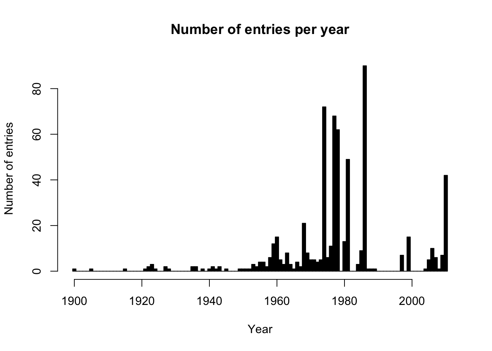
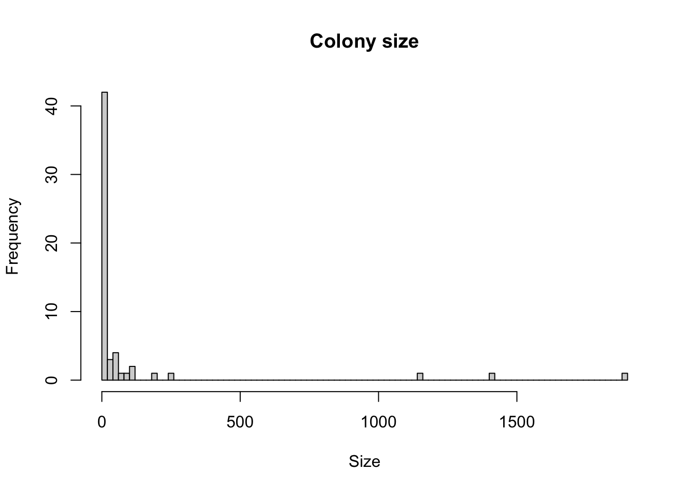
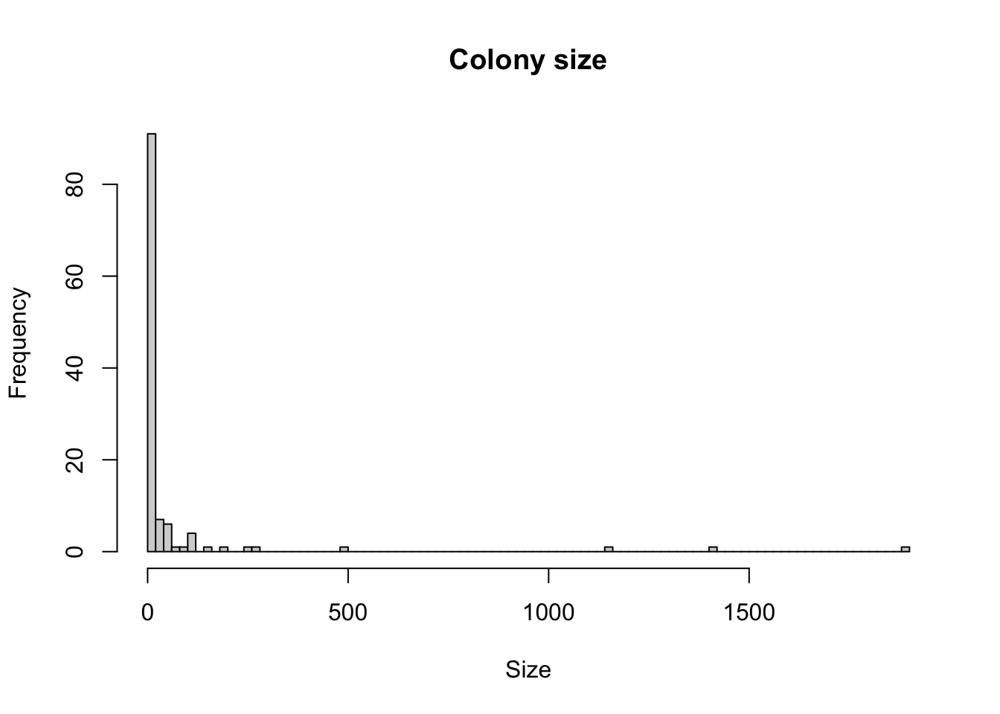
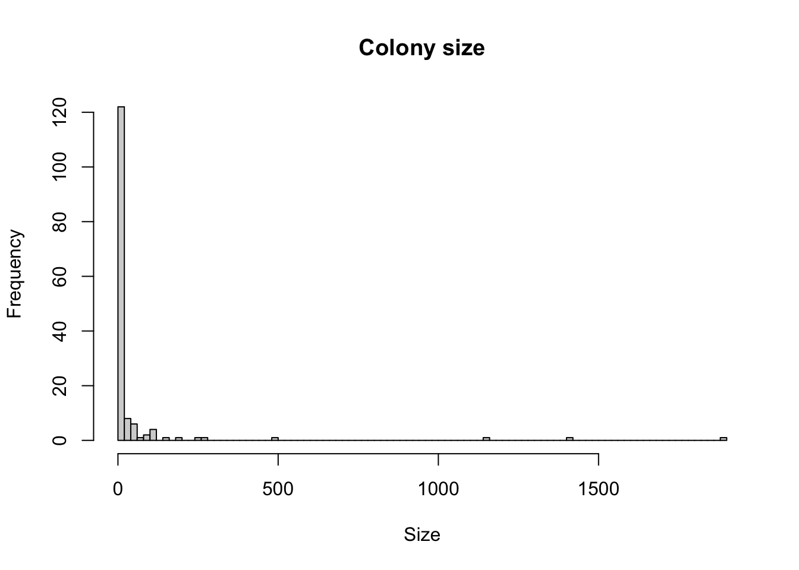
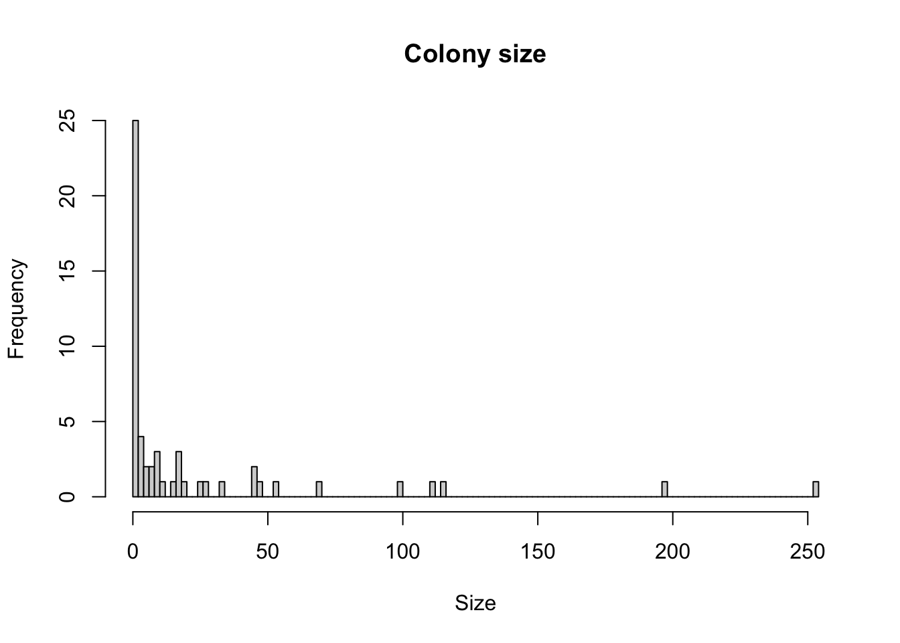

Glaucous-wing Gull data & maps
Data sources
I compiled data from two sources, King, Blight and Bertram 2020 (KBB2020 pdf, data provided in spreadsheet by Geoff Mullins) and Rodway, Campbell and Lemon 2023 (SCoBC2023 link, data scraped from table 6). Using KBB2020 as the most recent and comprehensive benchmark for GWGU, I added to this dataset the information of additional colonies from SCoBC2023. I did match up the location codes and cross referenced location names with SCoBC2023 to make the final dataset as compatible as possible with other resources.
In the next section I visualize the occupancy of all know colonies for different periods. Important information to keep in mind when assessing the maps:
The year mentioned is the start year for which data is included (i.e. 2000 means data from 2000 onwards)
Each known breeding location of GWGU in the dataset is indicated by a small black dot.
The counts (in red) are normalised between 0 (same size dot as black dot) and 10 (biggest colony in the dataset selection, i.e. not the entire dataset necessarily).
0 counts are not included to make it easy to see which colonies had active breeding
Data over time
Histogram showing the number of datapoints over time.
Based on the frequency distribution I take three periods, starting at 2005, 1980 and the whole period starting at 1900 as we want to especially focus on ‘recent’ data. Easy to change the dates if you like.
Maps
Starting from 2005
Histogram of counts including 0. There are 17 0’s out of the 58 entries from 58 unique colonies in this time period.

Map (excluding 0)
Starting from 1980
Histogram of counts including 0. There are 24 0’s out of the 118 entries from 118 unique colonies in this time period.

Map (excluding 0)
Starting from 1900
Histogram of counts including 0. There are 32 0’s out of the 151 entries from 151 unique colonies in this time period.

Map (excluding 0) Note that several locations are black, which indicates that there is no count data available but it was mentioned in SCoBC2023 as a breeding colony.
Smaller colonies focus
The above maps are really dominated by the larger colonies. By added an upper limit to colony size we can see how the medium to smaller colonies are distributed. Focus is on the more recent time period starting from 2005 and max colony size is 500.
Histogram of counts including 0. There are 17 0’s out of the 55 entries from 55 unique colonies in this time period.

Map (excluding 0)
Next steps
This is just a quick and dirty visualization exercise and we can tune it for our needs. For example:
delete the handful of very large colonies so we can more easily in more detail assess the smaller ones and look at.
add which colonies are covered for the upcoming survey.
add which colonies can be done by AUV from land.
etc.